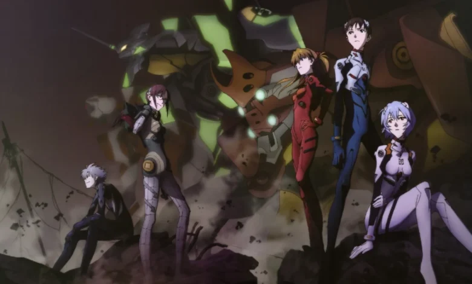

Neon Genesis Evangelion
Neon Genesis Evangelion (新世紀エヴァンゲリオン Shin Seiki Evangerion?), también conocida simplemente como Evangelion, o Eva, es una serie de anime creada por el estudio Gainax y animada por Tatsunoko Production, dirigida por Hideaki Anno. La historia de la obra se da lugar en un mundo futurista en el que una organización paramilitar llamada NERV protege a la humanidad de los ataques de seres de origen y naturaleza desconocidos, los «Ángeles», utilizando para ello bio mechas humanoides llamados Evangelion (acortado a EVA). A medida que avanza la trama, esta se vuelve paulatinamente más confusa y psicológica, en donde las personalidades de los personajes se hacen cada vez más inestables y su desarrollo se torna fundamental.
El anime cuenta con veintiséis episodios que fueron transmitidos por primera vez entre octubre de 1995 y marzo de 1996. Debido a la fama obtenida, pronto se fueron creando diversos spin-offs, entre los que se incluyen series de manga, películas y videojuegos que complementan u ofrecen una realidad alternativa de la historia.
A pesar de que el anime constituye la obra original, el manga creado por Yoshiyuki Sadamoto se comenzó a publicar anterior al estreno de la animación para aumentar el interés del público. Sadamoto ha declarado que el manga es su propia interpretación de Evangelion, mientras que el anime es la interpretación de Anno. El título japonés de la serie, Shin Seiki Evangerion (新世紀エヴァンゲリオン?), consta de dos partes: «Shin Seiki» (新世紀 lit. "Nueva era" o "Nuevo siglo"?) y «Evangelion», del griego clásico εὐαγγέλιον (buen mensajero, buena nueva), hispanizado como evangelio.
